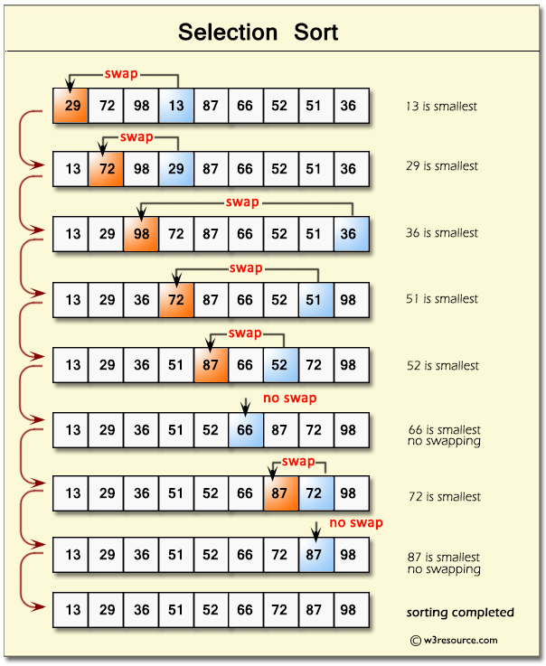

Inforamcje
Aby Przetestować strone należy wybrać algorytm powyżej, po przeniesieniu można przetestowac algorytm poprzez wpisanie odpowiednich danych.
Strona Wykonan w HTML, CSS i Javascript.
Autor: Kamil Janik
Dokumentacja: Kliknij tutaj

Algorytm Euklidesa
Algorytm Euklidesa służy do znajdowania największego wspólnego dzielnika (NWD) dwóch liczb naturalnych (A i B).
Polega on na wielokrotnym wykonywaniu dzielenia z resztą aż do momentu, gdy reszta z dzielenia będzie równa zero. Wtedy największym wspólnym dzielnikiem jest ostatnia niezerowa reszta.
Algorytm Flagi Polskiej
Algorytm flagi polskiej służy do posortowania tablicy zawierającej dwie wartości (0 i 1) w taki sposób, aby zero było na początku.
Algorytm flagi polskiej działa w taki sposób, że przegląda elementy tablicy od początku do końca, rozdzielając je na dwie grupy: 0 i 1. Na początku ustawiamy dwa wskaźniki: low (na pozycję 0) i mid (również na pozycję 0). Przeglądamy tablicę od lewej do prawej:
- Jeśli natrafimy na 0, to zamieniamy je z elementem na pozycji low, zwiększamy oba wskaźniki (low i mid) o 1 i przechodzimy dalej.
- Jeśli natrafimy na 1, to nie wykonujemy zamiany, tylko zwiększamy wskaźnik mid o 1 i idziemy dalej.
Algorytm Flagi Francuskiej
Algorytm flagi francuskiej tak jak w przypdaku flagi polskiej służy do posortowania tablicy ale zawierającej trzy wartości (0, 1 i 2) w taki sposób, aby zero było na początku potem 1 a na koncu 2.
Algorytm używa trzech wskaźników oraz jest przeglądana od lewej do prawej, aż mid przejdzie całą tablicę.
- low - wskazuje miejsce, gdzie powinny być umieszczone 0.
- mid - bieżący element, który sprawdzamy.
- high - wskazuje miejsce, gdzie powinny być umieszczone 2.
Algorytm Sortowanie Bąbelkowe
Sortowanie bąbelkowe to prosty algorytm sortowania, który działa poprzez wielokrotne przechodzenie przez listę i porównywanie sąsiednich elementów i zamienianie ich miejscami.
Algorytm ten nie jest zbyt wydajny [złożoność czasowa O(n²)] lecz przy małych zbiorach danych nie jest to problemem.
Algorytm Sortowanie Przez Wybieranie
Sortowanie przez wybieranie to algorytm sortowania, który polega na wielokrotnym znajdowaniu najmniejszeg elementu z nieposortowanej części tablicy i przenoszeniu go na właściwe miejsce.
Algorytm Wyszukiwanie Binarne
Algorytm Wyszukiwanie binarne to szybki algorytm służący do znajdowania elementu w posortowanej tablicy.
Działa na zasadzie dzielenia zbioru na pół i szukania elementu w caraz mniejszym zbiorze.
Algorytm dzieli tablice na pół i porównuje srodkową wartość do szukanej
- Jeśli jest równy - zwróć pozycję (element znaleziony).
- Jeśli mniejszy - przeszukuj prawą połowę.
- Jeśli większy - przeszukuj lewą połowę.
Algorytm Wydawania Reszty
Algorytm ten polega na tym by znalesc jak najlepszy sposób na wydanie reszty z dostępnych nominałów
Algorytm działa w prosty sposób: bierze najwiekszy możliwy nominał ktory nie przekracza kwoty reszty i odejmuje go od tej kwoty i powtarza cykl az do końca.
Algorytm Szyfru Cezara
Szyfr Cezara to jeden z prostszych i jeden z pierwszych szyfrów jakie zostały wymyślone.
Polega on na przesuwaniu liter w alfabecie o daną wartość (klucz), a odszyfrowanie polega na tym samym lecz w drugą strone.
Szyft ten jest bardzo prosty i służy tylko jako ciekawostka edukacyjno-historyczna ponieważ odszyfrować go może każdy człowiek przesuwając litery w alfabecie aż uzyska sensowne wyrazy lub zdania.
Algorytm Luhna
Algorytm Luhna (znany też jako moduł 10 lub mod-10) opracowany przez Hansa Petera Luhna w 1954 r. to algorytm sprawdzający poprawność numerów identyfikacyjnych, takich jak:
- numery kart kredytowych i debetowych
- numery PESEL
- numery seryjne
Działanie:
Odwrócenie numeru oraz podwajanie co drugiej liczby, jesli podwojona liczba jest wieksza od 9 to dodaj jej cyfry do siebie, potem każdą liczbe dodaj do siebie. Liczbą kontrolną jest liczba która dodana powstałej liczby dzieli sie przez 10.